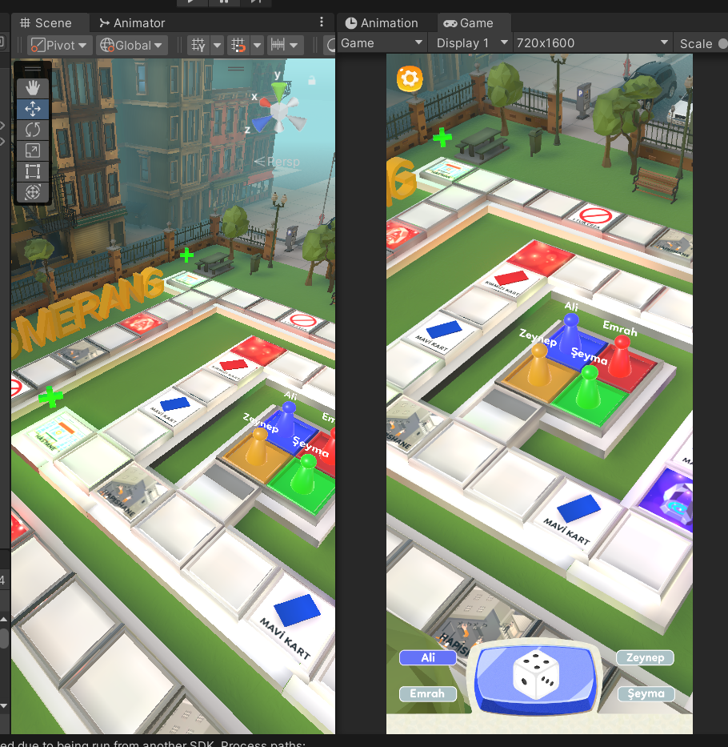
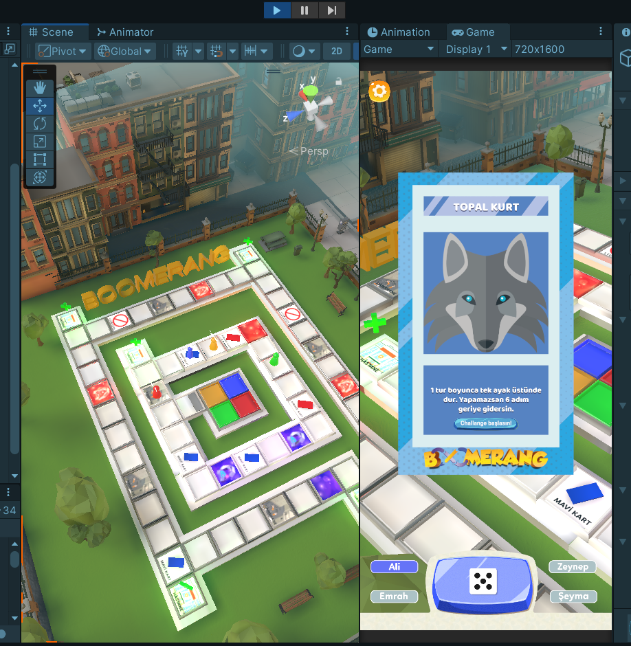

Yaren Yılmaz
Game Developer
About Me
I’m a passionate game developer who enjoys designing gameplay mechanics, coding core systems, and turning ideas into interactive experiences. I aim to create fun, polished games and always look for opportunities to learn and grow within the industry.
Experience
-
Freelance Game Developer (2022 – Present)
Developed several indie games using Unity for PC and mobile platforms. Managed full development lifecycle including coding, UI/UX design, and asset integration. -
Personal Projects (Educational & Freelance)
Created solo game projects, simulating real-world workflows — from GDD planning to prototyping, publishing, and maintaining game builds.
Selected Projects
-
Tumble Cube – 2D Multiplayer Puzzle Game (Unity)
Real-time movement and multiplayer logic designed from scratch.
-
Dysphrenia – 3D Psychological Horror Game (Unity)
Focused on atmospheric design and player interaction systems. -
FluffyRun – Endless Runner (Unity, Mobile)
Implemented ad integration and dynamic level generation.

-
Boomerang – Turn-based Strategy Board Game
Developed enemy AI logic and turn-based loop handling.   -
Catch the Cat – Challenging reflex game
-
2048 – Classic puzzle game clone
Enhanced logic and grid programming skills through development.
Technical Skills
- Unity / C#
- Game Design & UI/UX
- 2D/3D Gameplay Mechanics
- Version Control (Git)
- Mobile Development (iOS/Android)
- Basic Photoshop, Figma
Education
- 2024–2026 — Kyrenia American University, Computer Programming
- 2020–2024 — Zübeyde Hanım Vocational and Technical Anatolian High School, Software Development